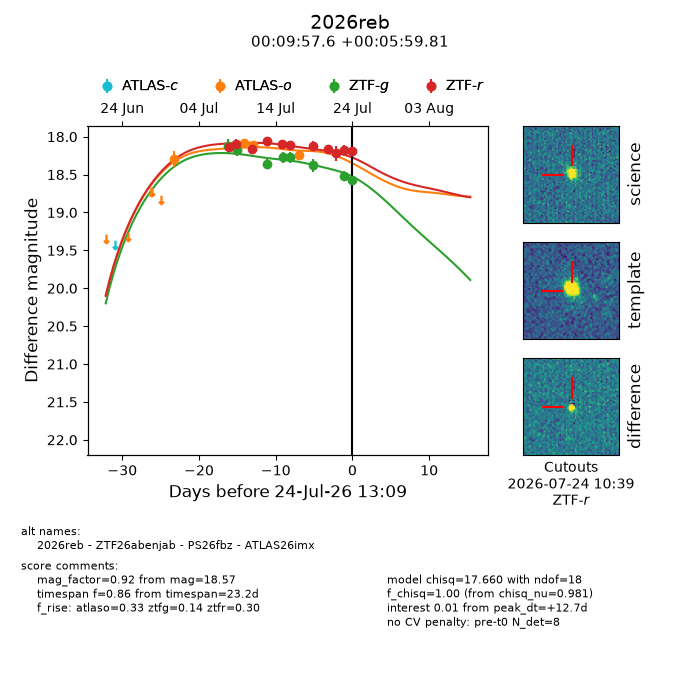
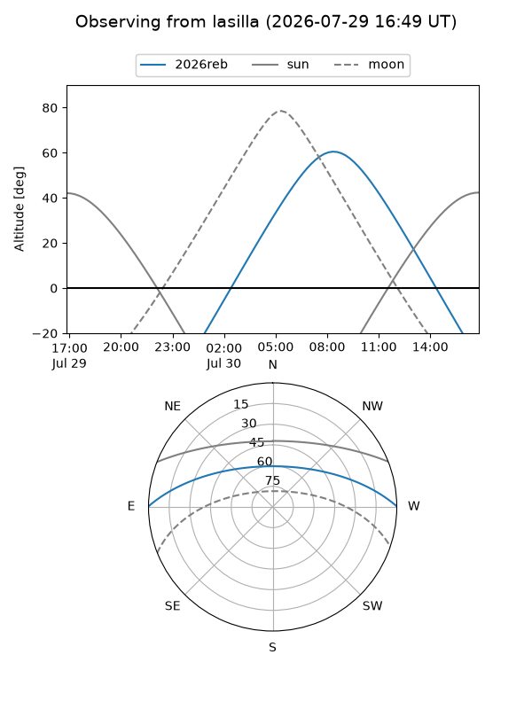
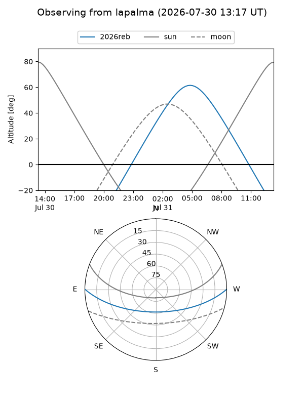
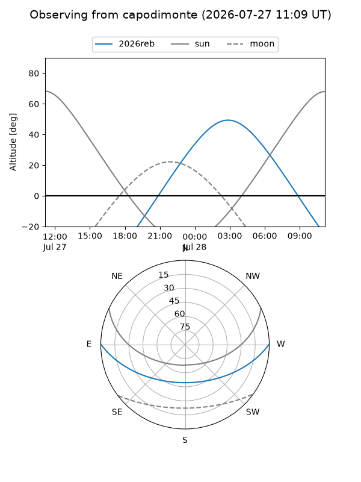
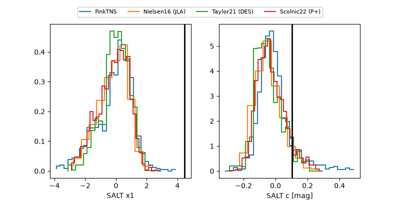

2026reb
Target 2026reb at 2026-07-24 13:11
Aliases and brokers:
FINK-ZTF: ztf.fink-portal.org/ZTF26abenjab
Lasair-ZTF: lasair-ztf.lsst.ac.uk/objects/ZTF26abenjab
ALeRCE-ZTF: alerce.online/object/ZTF26abenjab
YSE-PZ: ziggy.ucolick.org/yse/transient_detail/2026reb
TNS name: wis-tns.org/object/2026reb
Direct TNS query: direct search
alt names
ZTF26abenjab (ztf,fink_ztf)
2026reb (tns,yse)
ATLAS26imx (atlas)
PS26fbz (panstarrs)
Coordinates:
equatorial (ra, dec) = 2.4899,+0.09995
equatorial (HMS+DMS) = 00:09:57.57,+00:05:59.81
galactic (l, b) = (101.1347,-61.00420)
Flags:
TNS type: nan
peak dt: +12.7
Photometry:
last atlaso=18.24, ztfg=18.57, ztfr=18.19
4 atlaso, 8 ztfg, 11 ztfr detections
Lightcurve

Visibility



Additional plots
